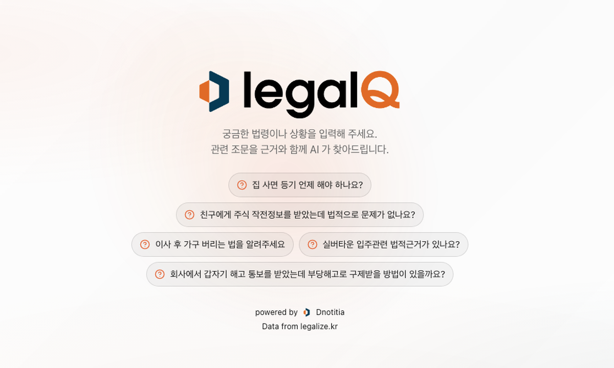
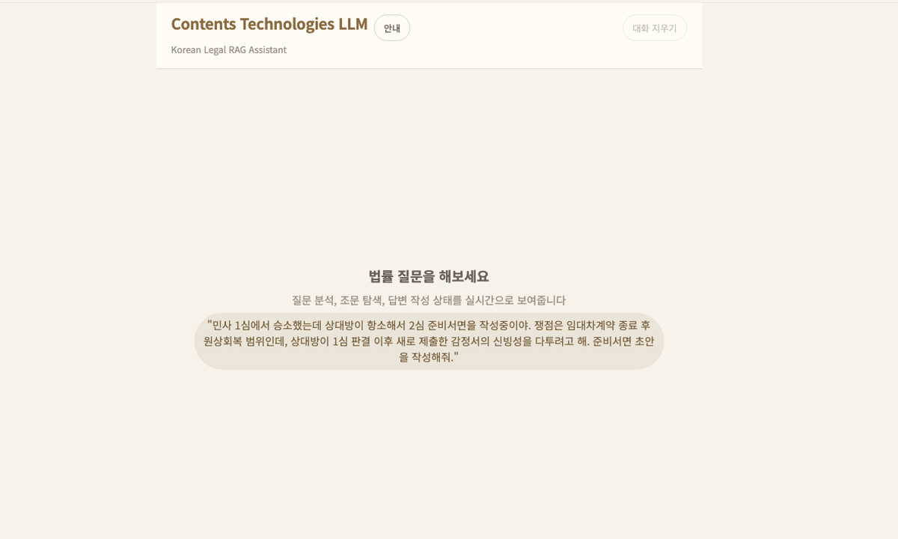
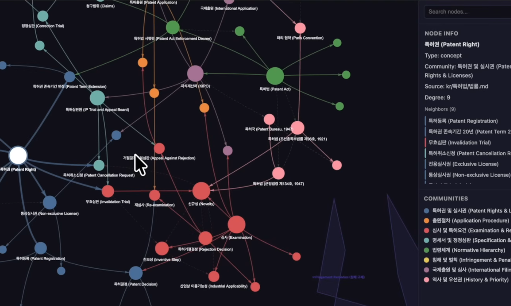

RAG & AI 법령 검색
리걸큐(legalQ)

VectorDB 전문 기업 Dnotitia의 자연어 기반 AI 법령검색 서비스입니다. legalize-kr 데이터셋을 활용하여 법령 변경 이력까지 포괄하는 법령 데이터를 검색할 수 있습니다.
리걸큐(legalQ) 서비스 보기usage
Legalize KR 데이터는 Git 저장소로 직접 다룰 수도 있고,
legalize-cli, MCP 서버, Agent용 SKILL을 통해 자동화와
AI 워크플로에 연결할 수도 있습니다.
legalize-cli는 Git clone 없이 GitHub REST API로 법령,
판례, 자치법규, 행정규칙을 조회하는 명령행 도구입니다. 사람이 직접
조회할 때는 표준 출력으로 읽고, Agent나 스크립트에서는
--json 출력을 사용합니다.
laws list, laws get, laws article로 목록, 전문, 조문을 조회합니다.
precedents list, precedents get으로 법원, 사건종류, 사건번호 기준 조회를 합니다.
search 명령으로 네 데이터셋 전체를 좁은 질의부터 검색합니다.
pipx install legalize-cli legalize laws get 민법 --date 2015-06-01 --json legalize laws article 민법 제839조의2 --date 2015-06-01 --json legalize precedents list --court 대법원 --type 민사 --json legalize ordinances list --jurisdiction 서울특별시 --type 조례 --json legalize admrules list --agency 행정안전부 --type 고시 --json legalize search "부동산 점유취득시효" --in all --json
MCP는 Claude Desktop, Cursor, VS Code 등 MCP 클라이언트에서 Legalize KR 데이터를 도구로 호출할 때 사용합니다. 자연어 질문은 Agent가 해석하고, 실제 법령·판례 조회는 로컬 stdio MCP 서버가 수행합니다.
{
"mcpServers": {
"legalize-kr": {
"command": "uvx",
"args": ["--from", "legalize-cli[mcp]", "legalize-mcp"]
}
}
}
agent-skills 저장소는
Agent가 Legalize KR 데이터셋, 출처 표기, CLI/MCP/Git 접근 방식을
이해하도록 돕는 지침 계층입니다. 실제 조회 실행은
legalize-cli와 legalize-mcp가 담당합니다.
플러그인 마켓플레이스에 legalize-kr/agent-skills를 추가한 뒤 설치합니다.
Cursor, Codex, Gemini CLI, Cline, Warp 등에서는 npx skills로 스킬을 설치합니다.
Release 페이지의 legalize-kr-plugin.zip을 업로드해 스킬을 선택합니다.
claude plugin marketplace add legalize-kr/agent-skills claude plugin install legalize-kr@legalize-kr-marketplace npx skills add legalize-kr/agent-skills --skill legalize-kr
공개적으로 확인된 활용 사례입니다. 각 서비스는 Legalize KR 데이터를 검색, RAG, 그래프 지식화 등 서로 다른 방식으로 사용합니다.

VectorDB 전문 기업 Dnotitia의 자연어 기반 AI 법령검색 서비스입니다. legalize-kr 데이터셋을 활용하여 법령 변경 이력까지 포괄하는 법령 데이터를 검색할 수 있습니다.
리걸큐(legalQ) 서비스 보기
Contents Technologies의 한국 법령 RAG Assistant입니다. legalize-kr의 법령·시행령 전체 및 판례 데이터를 내려받아 로컬 LLM에 연결해 구성했습니다.
CT LLM 서비스 보기
오늘코드의 Graphify 소개 영상입니다. legalize-kr 저장소의 대한민국 법령 문서를 가져와 그래프 기반 지식화와 토큰 절감 방식을 검증합니다.
오늘코드 영상 보기